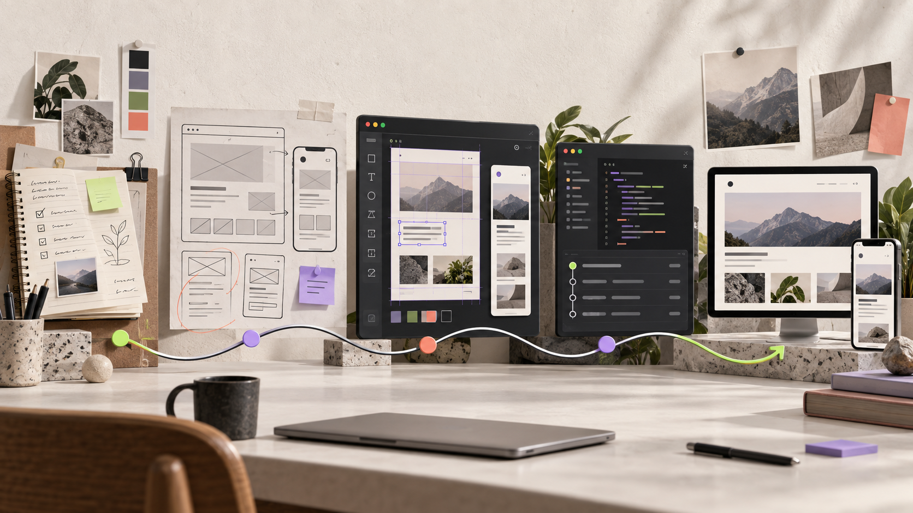

Personal Process · September 16, 2026
I Had to Build My Portfolio More Than Once
From a practical Notion page to a portfolio shaped through Figma, Framer, Codex, and GitHub—the long route to a website that finally feels like mine.
Read article